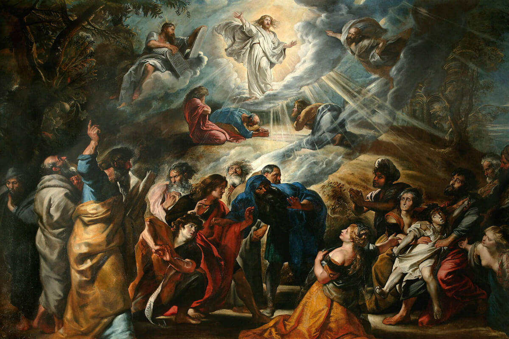
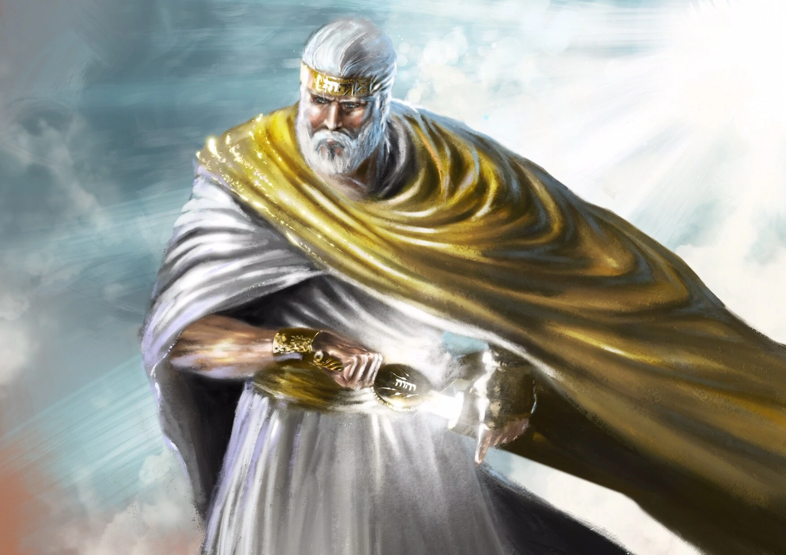

Introduction
After a year of studying the Old Testament and with the Christmas season upon us, thoughts naturally gravitate toward Jesus Christ. It’s common to review one’s relationship with the Savior and learn more of Him.
My personal thoughts have been draw to the common depictions of the Savior since the Renaissance. We’ve seen innumerable artistic depictions of The Son of God and countless oral and written narratives that have influenced society’s perception of His earthly life.
Despite having a solid understanding of his humble birth, meager upbringing, controversial ministry, and bitter suffering, the aforementioned depictions of Christ have figuratively painted a picture in all our minds of a man, ruggedly handsome, white, large in stature, beloved by true believers, and merely misunderstood by skeptics.
The more I learn, the less I resonate with these depictions. In fact, this past year has emboldened my suspicions that these creative liberties distract and confuse.
It’s my intent to explore Christ’s foreordination, the landscape of ancient Israel, the details of Jesus’ life on earth, and the encounters with His resurrected self to challenge our misconceptions in order to unlock a deeper power in his example and instruct about discipleship in modern day.
Christ’s Foreordination
Our mission and development path in this grand “Plan” extends to become as God is: an immortal being with power similar to His. Spirit and physical life were crucial steps to achieving these objectives.
But God’s plan required agency, freedom to choose one’s path and to merit its consequences. This the Godhead knew would require an intermediary to satisfy the justice and mercy of the law.
John the Revelator foresaw this moment:
And I saw a strong angel proclaiming with a loud voice, Who is worthy to open the book, and to loose the seals thereof?
And no man in heaven, nor in earth, neither under the earth, was able to open the book, neither to look thereon.
And I wept much, because no man was found worthy to open and to read the book, neither to look thereon.
And one of the elders saith unto me, Weep not: behold, the Lion of the tribe of Juda, the Root of David, hath prevailed to open the book, and to loose the seven seals thereof.
Christ was chosen since the beginning. The role was always known and Jesus had always been cast. Lucifer interjected in the final hour with a counter proposal, whose plan required no Savior and undermined the very object of the plan.
Nephi saw Christ’s earthly life in vision over 600 years prior to His birth. An angel questioned him, “Knowest thou the condescension of God? And I said unto him: I know that he loveth his children;” (1 Nephi 11:16-17). Nephi proceeded to see all the good and bad that would befall the mortal Christ.
The Brother of Jared, hundreds of years prior, also saw the premortal Christ, Jehovah, and was taught of His life one day:
Behold, I am he who was prepared from the foundation of the world to redeem my people. Behold, I am Jesus Christ. I am the Father and the Son. In me shall all mankind have life, and that eternally, even they who shall believe on my name; and they shall become my sons and my daughters.
This condescension is defined by Noah Webster’s 1828 Dictionary in saying, “Voluntary descent from rank, dignity or just claims; relinquishment of strict right; submission to inferiors in granting requests or performing acts which strict justice does not require.”

Jesus Christ, star of pre-mortal life, executor of the Creation, and chosen Savior to mankind voluntarily descended from His rank and status, submitting to the inferior state of mortality so that we may overcome as He would.
For the thousands of years before and the thousands of years since, all generations have looked to Christ’s coming for hope. By investigating how the people of earth we taught of His coming, we can narrative frame His life properly.
Ancient Israel
To understand the environment into which Jesus was born and why events happened as they did, it’s crucial to gain context for the paradigm beheld by Jews before and during Christ’s time.
Just as learning about the landscape and time period surrounding the unique events of the restoration of the gospel fosters deeper testimony, so can putting ourselves in the shoes of those who awaited The Messiah’s first coming.
Old Testament Types & Symbols
The Old Testament is a history of ancient people of the Holy Land, a record of its prophets’ communication with Jehovah, and the foretelling of the Messiah’s future visit to Earth to liberate His people and destroy their oppressors.
Often these themes intertwine but at their core these are the messages ingrained into every “believer” of ancient times. Every scripture hero, every story, and every tradition pointed to that eventual day.

- From Adam & Eve sprung the life of mankind, just as their God would spring life everlasting
- Sodom & Gamora were destroyed for their wickedness, but not before securing the righteous, just as was prophesied for the day of The Lord
- Moses brought the destruction of the Lord to liberate His people of the Egyptians, just as God would liberate again at His coming
- David conquered the giant Goliath, just as the mighty kingdoms of earth would crumble before their God
- Elijah rained fire on the wicked priests and soldiers, just as was prophesied for The Lord’s coming
The prophet Isaiah foretold of the coming Messiah often and in great detail. In fact, he specifically cited the government (of which the Israelites knew many in their history), how the Lord would assume His role of ruler and thereby expelling whatever worldly force occupied His lands.
For unto us a child is born, unto us a son is given: and the government shall be upon his shoulder: and his name shall be called Wonderful, Counsellor, The mighty God, The everlasting Father, The Prince of Peace.
In subsequent chapters, Isaiah would continue to make mention of the impending visit of the Lord while using language consistent with the destruction of the wicked and the lifting up of the righteous.
“Burn”, “devour”, “consume”, “[hew] down”, “cut down”, etc., are all words and phrases used by Isaiah to describe the great and terrible day of the Lord.
“Burden taken away”, “yoke destroyed”, “stay upon the Lord”, etc., Isaiah mentions to illustrate the salvation and restoration God would bring His chosen people.
To modern day Christians, these explicit prophecies make perfect sense thanks to the New Testament, The Book of Mormon, and the benefit of 2,000+ years of historical hindsight. However, less explicit declarations abound in the Old Testament and even today we struggle to put two and two together.
Now place yourself some decades before the Meridian of Time with only the above prophecies, scriptural heroes, and the mounting “interpretation of men” to provide a lens through which to await the Messiah.
Landscape before Christ’s Time
The latter half of the Old Testament details the line of Judah working to settle into the Holy Land in and around Jerusalem. Their ancestors occupied the region in the early days and returned from captivity in Egypt only to find their inherited land occupied by disbelievers.


For most all of history, Israel was a highly coveted region. It was the connective tissue between Europe and Africa. With the Mediterranean Sea to the West and the Syrian Desert to the East, trade and travel from all around was forced through Israel like a funnel.
Naturally, the rise and fall of the world’s empires all occupied a common region at some point: Israel. Out of the pan in Egypt and into the fire of the Holy Land, so to speak. From Babylon to Persia, Assyria to Greece, the land was rarely theirs and theirs alone.
Much as the Lamanites to the Nephites of The Book of Mormon, the surrounding nations served to hasten the Lord’s people to repentance when they strayed from His word.
And inasmuch as ye shall keep my commandments, ye shall prosper, and shall be led to a land of promise; yea, even a land which I have prepared for you; yea, a land which is choice above all other lands.
And inasmuch as thy brethren shall rebel against thee, they shall be cut off from the presence of the Lord…
And if it so be that they rebel against me, they shall be a scourge unto thy seed, to stir them up in the ways of remembrance.
Can we not begin to narrative frame these prophecies and stories?
Whilst continually being oppressed by neighboring nations and seeing the destruction of their holy temple, all the while being told they were the Lord’s chosen people and hearing these promises of liberation, the Jews couldn’t help but anticipate and look for Jehovah’s grand visit.
As the years approached the coming of Christ even further, more prophets shared messages detailing this visit. Incidentally, the vague nature of these words further confused what to look for:
God is jealous, and the Lord revengeth; the Lord revengeth, and is furious; the Lord will take vengeance on his adversaries, and he reserveth wrath for his enemies.
The Lord is slow to anger, and great in power, and will not at all acquit the wicked:
O Judah, keep thy solemn feasts, perform thy vows: for the wicked shall no more pass through thee; he is utterly cut off.
Having a record of Christ’s first visit, much of Christianity interprets these prophecies as detailing the Second Coming. But in X number of years before Christ, why would the Jews have thought that?
Put yourself in their place and formulate a mental picture of the Lord as they would have interpreted They were awaiting a military general with superhero powers.

Think of the super heroes in our day. They are all modern faccimiles on old Roman, Greek, and Egyptian gods which themselves derived from pagan interpretations of God Almighty Himself.

They likely imagined the Messiah as Thor; big, strong, powerful, and imposing; a warrior and a ruler, coming in light and magnificence, demonstrating his power and majesty to the entire world.
This is the paradigm through which the Israelites awaited the Messiah. This is what they looked and prayed for. Can you blame them?
Landscape During Christ’s Time
Not unlike the hundreds of years leading up to the meridian of time, the Holy Land once again fell under rule of a neighboring nation. This time the Romans, some 64 years BC, conquered Jerusalem and occupied the surrounding land.
James E. Talmage described the sentiment percolating the time:
Needless to say, the Jews took not kindly to alien domination, though for many generations they had been trained in that experience, their reduced status having ranged from nominal vassalage to servile bondage.
More than ever the need for the Lord’s reign was dire. The land was suffering through an apostasy where no prophet was called to instruct and prepare.
Instead, the Jews leaned into their traditions and interpretations of the law. So arose the Pharisees and Sadducees, mixing political agendas with strict adherance to the letter of the law.
With this hyper focus, surely the senses were heightened and the eyes peeled evermore for the Lord’s coming. The stage was set and the people ready.
Clearly that’s why the time was chosen for Christ’s earthly mission. The details of the mission, to first provide spiritual salvation, proved inconsistent with expectations.
Christ on Earth
Having now a sufficient refresher of the context for Christ’s life, we’ve painted a backdrop to understand the how of it all.
Much of Christ’s birth and eventual mortal ministry have been romanticized as we focus on His teachings, example, and resurrection. But these are only as powerful today with a realistic understanding of Jesus’ real experiences on earth.
Challenging the Narratives
We make much of Christ’s humble beginning, especially when celebrating His birth. Indeed He was born in circumstances befitting a man who’d experience the worst a fallen world had to offer.
Jesus found himself greeting the world away from His earthly parents’ home as they traveled to the land of their lineage. Due likely to the inconveniences of a small town swelling with an increase of visitors, the young family sought refuge in a stable where the baby Jesus would lie in a manger.

Signs abounded to announce the Savior’s birth but resembled not the grandeur anticipated by the Jews. No crowds or military hosts greeted their fearless leader. He was not bathed in riches or crowns that night.
In most all respects imaginable, Christ came to earth as quietly and destitute as any.
Jesus’ childhood and development is largely a mystery, save a few passages toward the end of Luke 2:
And the child grew, and waxed strong in spirit, filled with wisdom: and the grace of God was upon him…
The child Jesus tarried behind in Jerusalem; and Joseph and his mother knew not of it…
And it came to pass, that after three days they found him in the temple, sitting in the midst of the doctors and they were hearing him and asking him questions.
And all that heard him were astonished as his understanding and answers.
Certainly Jesus, even as a young man, was physically capable and highly developed intellectually. However, it’s unlikely that the elite of the day hadn’t seen child prodigies or at minimum saw to rigorous education of fortunate youth.
It wasn’t Christ’s years that surprised them alone. There must have been other components that made this particular boy so unlikely to possess such wisdom and communication skills.
We now have the first bit of first hand evidence for what Christ mission was foreordained to be.
Really a Carpenter?
Take Jesus’ trade: carpenter. While certainly not a glamorous profession, Christianity has embraced the endearing, romantic notion of a carpenter.
Consider a common depiction of young Jesus alongside Joseph in a quaint workshop. A dose of historical reality frames this narrative differently.

Carpenter, or tekton in Hebrew, refers to a builder of various materials. Was wood the material of choice in barren Nazareth or would stone have been more common? Discipleship and Ethics explores the topic more in a June 2022 post, adding to the idea that Christ was more of a construction worker than the English translation leads us to believe.
Christian Professor Jordan Monson of Northwestern University further summarizes the profession in saying, “Jesus was not elite. His trade was not respected” (Christianity Today).
Jesus and his earthly father figure Joseph were laborers, subject to demanding, dangerous work befit for those with no alternative.
Nazareth
When Christ began his mortal ministry, calling disciples and beginning to teach, the Apostle Phillip invited Nathaniel to come and see Jesus of Nazareth. Nathaniel’s response reveals the common perception of Jesus’ homeland: “Can there any good thing come out of Nazareth?” (John 1:46).

In our day, he’d have been the trailer park kid, from the other side of the train tracks. He’d have been the kid others picked on and avoided being around. As an adult, he’d have been profiled and defined purely based on his environment.
This shouldn’t come as a surprise. Isaiah put it very plainly:
He is despised and rejected of men; a man of sorrows, and acquainted with grief…he was despised, and we esteemed him not.
You don’t become “acquainted with grief” from 24 hours of suffering in Gethsemane and on Calvary. No, He was familiar with prejudice and cruelty all His life and it likely wasn’t just because He was poor.
No Form Nor Comliness
As commonplace as physical disabilities and deformities are in our society today, consider the increased frequency that accompanied ancient times without modern medicine and the conveniences of daily life tha afforded safety and security.
It’s my belief that Jesus lived with a deformity or psychical attribute that prompted the prophet Isaiah to describe Him in such brutally descriptive a summary as this:
For he shall grow up before him as a tender plant, and as a root out of a dry ground: he hath no form nor comeliness; and when we shall see him, there is no beauty that we should desire him…
And we hid as it were our faces from him;
Did the incarnate Christ have rotten or missing teeth? A clef palette? Were his features disproportionate? Did he have a skin condition? Did he have an awkward gait? Was he too tall or too short, too thick or too thin?
Forget the chiseled mountain man or the comely white prince. Christ was an ancient Jew of Palestine. He had black hair, brown eyes, and olive skin. By all accounts, He was, in crass terms, ugly and forgettable.
Consider the below images generated via Artificial Intelligence (AI) using prompts similar to the words of Isaiah. Perhaps these paint a more realistic depiction of Christ:
Based on Christ’s foreordained mission, Old Testament symbols, prophetic descriptions, disciple accounts, and modern day research, ask yourself: which more closely depicts our earthly Savior?
White, handsome and inviting or dark, ragged and avoidable?
Granted, these perspectives challenge the narrative society has conditioned us to. But consider accounts from the New Testament through this lens:
Sermon on the Mount
The first public ministry on record in Matthew is the Sermon on the Mount. He begins in chapter 5 speaking of “the poor in spirit”, “they that mourn”, “the meek”, “they that hunger and search after righteousness”, “the merciful”, “the pure in heart”, “the peacemakers”, and “they which are persecuted for righteousness”.
These He calls “Blessed”.
That’d be mighty insulting and arrogant coming from someone popular, well put together, and respected. But from someone who visually fits these categories? Talk about powerful.
Healing the Leper
Christ was approached by “publicans and sinners” who sat to eat with Him and His disciples. Why would societal castoffs cling to Jesus? That
Christ performed an array of miracles to mend the broken body. The blind man, the cripple, the dead, and the sick. Most every time they sought Him out. They would leave the comfort of their isolated life to bear the scorn and rage of the “whole” who cared not for their presence.
Sure, the reputation for healing certainly emboldened the afflicted to come but there had to have been
Eating with the Sinners
Christ was approached by “publicans and sinners” who sat to eat with Him and His disciples. Why would societal castoffs cling to Jesus? That
Resurrected Christ
When we talk of the resurrection restoring our physical bodies to their ultimate state it’s often cited in context of those with disabilities. Certainly not with any malice but just out of the powerful example of how transformative the resurrection will be.
The scriptures mention the resurrection often, illustrating similarly drastic examples.
The soul shall be restored to the body, and the body to the soul; yea, and every limb and joint shall be restored to its body; yea, even a hair of the head shall not be lost; but all things shall be restored to their proper and perfect frame.
And now, my son, this is the restoration of which has been spoken by the mouths of the prophets
As an aside, it’s interesting that the resurrection is discussed using the word “restoration”. It can’t just mean restored to your earthly prime. No, it must mean being restored to the physical design befitting our spiritual design.

This kind of restoration surely applied to Christ as much as anyone. With all we have explored about Jesus’ earthly afflictions, it stands to reason Christ underwent the ultimate transformation. This is explained in John’s detailed account of His first interaction since resurrection.
But Mary stood without at the sepulchre weeping: and as she wept, she stooped down, and looked into the sepulchre…
She turned herself back, and saw Jesus standing, and knew not that it was Jesus. She, supposing him to be the gardener, saith unto him, Sir, if thou have borne him hence, tell me where thou hast laid him, and I will take him away.
Jesus saith unto her, Mary. She turned herself, and saith unto him, Rabboni; which is to say, Master.
How did Mary not recognize Jesus of Nazareth? Only days previous had she seen Christ prior to his torturous physical sacrifice. In addition, she was actively looking for Jesus in the place his was last seen.
Unlike a chance grocery store encounter with an old friend whom you failed to recognize at first glance, Mary was hyper aware and alert for the slightest clue.
The obvious answer is Jesus looked most unlike Himself. Not in manner of dress given that Mary mistook him for the gardener. No, in terms of skin and bones the resurrected Savior was drastically transformed from His earthly self. It was the name, “Mary”, and how it was uttered that assured without a doubt it was Him.
And she wasn’t the only close associate of the Savior to look without seeing. Disciples on the road to Emmaus were “holden that they should not know him” (Luke 24:16).
“Holden”, as in restrained or confined. Many likely associate this state with an intentional power put over them. I theorize it was a mere symptom of mistaking the resurrected Christ for their mortal Master. It wasn’t until later, upon performing the sacrament were “their eyes opened, and they knew him (Luke 24:31”. A coincidence that the Savior performing an ordinance symbolizing the very sacrifice He underwent some days beforehand jogged their memory? Unlikely.
Even on the sea of Tiberias, after having seen the risen Christ, disciples again mistook Jesus. From afar, no doubt as they were fishing and Christ on the shore, but certainly with enough proximity to communicate. It wasn’t until after a miracle and an invitation to dine (another sacrament perhaps?) did they know it was Him.
The fact is He was unrecognizable.
Likely, this is the state in which most ponder the Savior, as it probably should be. But we cannot ignore the life of trial. For therein the atonement and resurrection have their power.
An Empowering Gift
We might ask ourselves when confronted with the brutal details of Christ’s years on earth, “Why does it matter?”
Indeed, why does a more complete understanding of Christ confronting, succumbing, and ultimately defeating afflictions every day of His life?
Jeffrey R. Holland of the Quorum of the Twelve Apostles explained that “These portrayals serve as constant reminders to us of the price that was paid and the victory that was won by Him whose servants we are” (2022 October General Converence).
The Atonement
There’s great power in learning that He doesn’t just know what we feel but that He lived what we feel. When our soul cries out that no one gets it, the Spirit may reassure that Jesus does get it—in fact, He lived it.
Joseph Smith in Liberty Jail was thus instructed. Separated from family for months, subject to the bite of cold, the wretch of sickness, the pains of hunger, and a tormented mind; in this state the Lord reminded Joseph of His life of trial:
If thou art called to pass through tribulation…The Son of Man hath descended below them all. Art thou greater than he?
Notice the reference to Christ: “The Son of Man”. Not “The Son of God” or other names associated with his glorified state. Instead, a reference to his condescended state. That version of Christ experienced the lowly depths of every conceivable earthly horror.
Make no mistake: Jesus didn’t cite His own experience like one might do at a dinner party: “Oh that ain’t nothin’”. No, He shows us that He went through it and survived; and With His help, so may we.

This taught the prophet Alma: “And he will take upon him death…[and] their infirmities, that his bowels may be filled with mercy, according to the flesh, that he may know according to the flesh how to succor his people…” (Alma 7:12).
Recognize Him?
I’ve often wondered, “How could the Jews have missed Him? How did they not see He was what they were looking for?” As I’ve learned all this context, I’ve now come to ask a different question: “Would I have missed Him?”
Think of the people you’ve “esteemed not”, “despised”, or from whom you’ve “hid your face”? Perhaps beggars at an intersection or simply people in your circle of influence that rub you wrong.

In these instances, we should train our soul to open our eyes, minds, and hearts to the fact that Jesus was one of them and was just so thought of.
In parable, Christ taught this very truth:
Verily I say unto you, Inasmuch as ye have done it unto one of the least of these my brethren, ye have done it unto me.
By esteeming the “least of these”, we so value and recognize Jesus Christ, for He was “one of the least of these”.
Conclusion
In learning of Jesus’ mission and life, we cannot overlook that the entire plan hinged on Christ descending below us all, from birth and every day of His life. We cannot overstate that overcoming all this affliction was integral to everyone’s success of this stage of existence.
We must focus on His suffering, long enough to root our testimony in His intimate knowledge and experience of what’s befallen us, so that His resurrection and atonement can transform us as intended.
I hope this Christmas season and beyond we may celebrate His win knowing just how many odds were stacked against Him and yet conquered all. May this inspire and embolden us to overcome with His aid.